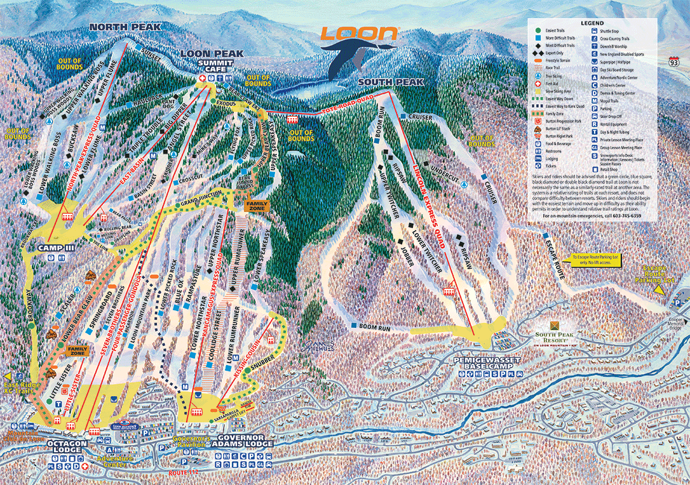

I have been skiing since I was about 9 years old, and now it is my favorite activity to do, it a fun way to get outdoors during the winter.
Gunstock was the mountain that I basically did all my childhood skiing, with it only being about 45 minutes way from my home it always made it easy to get to. With is being so close I was able to get a season for 6 years which made it more of a desire to go. It's a great mountain with the benefits of it being so close and just an all around great ski resort.
The College Pass is a pass for college students that allows you to ski at the following 3 mountains:
Carrabassatt Valley, Maine
Newry, Maine

Lincoln, New Hampshire